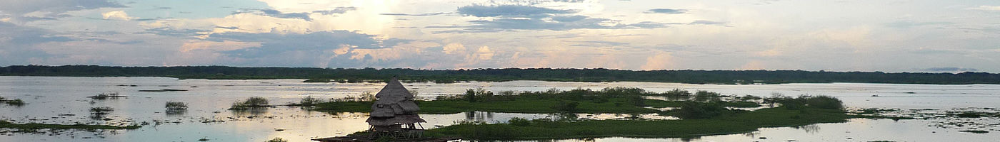

13 Wohin geht die Reise?
Niveau B1 Sprachhandlung Informationen erfragen Thema Urlaub Grammatik indirekte Fragen
Wenn ich gefragt werde, wo mein schönster und aufregendster Urlaub war, antworte ich: in Südamerika, im Dschungel von Peru, in der Stadt Iquitos.

Haben Sie schon einmal an einem ungewöhnlichen Ort Urlaub gemacht? Was haben Sie dort getan oder erlebt? Notieren Sie an der Tafel.
Hören Sie folgenden Radiobeitrag. Wohin geht die Reise?
Hören Sie dann noch einmal und beantworten Sie die weiteren Fragen.
Weitere Fragen
Versuchen Sie zu hören, …
- wie die Landschaft auf dem Mond ist.
- was es auf dem Mond zu essen gibt.
- wieviel ein Urlaub auf dem Mond kostet.
Manuskript
Urlaub auf dem Mond
Vor 50 Jahren betrat Neil Armstrong als erster Mensch den Mond. Schon bald könnte es sogar Touristen dort geben. Die Reise ist zwar weder komfortabel noch günstig, aber die Nachfrage ist trotzdem da.
Bisher sind erst 12 Menschen über den Erdtrabanten spaziert. Alle waren Astronauten der USA und zwischen 1969 und 1972 auf dem Mond. Wann die nächsten Menschen ihn betreten werden, ist noch unsicher. In der Vergangenheit wurden Starttermine privater Raumfahrtfirmen immer wieder verschoben, weil die technischen Herausforderungen zu groß sind.
Eins muss den Weltall-Touristen klar sein: Der Aufenthalt auf dem Mond stellt auch den menschlichen Körper vor besondere Herausforderungen und wird so automatisch zum Aktivurlaub. Das Herz wird kleiner, und die Muskeln bilden sich zurück. Deshalb muss man dort jeden Tag Sport machen.
Und schön ist es auf dem Mond auch nicht, sagt der deutsche Astronaut Alexander Gerst. „Der ist relativ grau, staubig, da ist ein Vakuum, grelles Sonnenlicht, minus 150 Grad in der Nacht, plus 150 Grad am Tag.“ Auf leckeres Essen sollten Urlauber dort nicht hoffen; es wird meist gefriergetrocknet. Frisches Obst gibt es selten, Chips gar nicht, weil die Krümel in der Luft herumfliegen und sich dann in wichtigen Filtern festsetzen könnten.
Einen Urlaub auf dem Mond können sich nur sehr reiche Leute leisten. Wenn die NASA ab 2020 Touristen zur Internationalen Raumstation ISS bringt, sollen diese etwa 35.000 Dollar pro Tag zahlen. Für die An- und Abreise kommen noch einmal 50 Millionen Dollar dazu. Wem das zu teuer ist, der kann auch erst einmal in eine der vielen Ausstellungen über den Mond gehen, die in den Museen auf der ganzen Welt zu sehen sind.Bilden Sie kleine Gruppen und wählen Sie ein aufregendes, ungewöhnliches, wahnsinniges, verrücktes Reiseziel aus. Bevor Sie die Reise antreten, sollten Sie im Reisebüro die wichtigsten Fragen klären. Überlegen Sie gemeinsam, was wichtig ist: Kosten, Transport, Gesundheit, Unterkunft, Vorbereitungen, … Formulieren und notieren Sie dann Fragen an die Mitarbeitenden im Reisebüro.
Formulieren Sie indirekte Fragen. Das ist höflicher als direkte Fragen.
Ich möchte gern wissen, …
Darf ich fragen, …
Ich wüsste noch gern, …
Zum Beispiel:
Darf ich fragen, was ein Flug zum Mond kostet? Ich möchte gern wissen, welche Urlaubsaktivitäten auf dem Mond angeboten werden. …
Pause
Bereiten Sie in der Gruppe einen kleinen, lustigen Sketch Im Reisebüro (Mitarbeiterin, Kundin mit Familie, usw.) vor.
Spielen Sie Ihren Sketch im Plenum vor. Sehen Sie den Sketch an und notieren Sie alles, was Sie über die Reise erfahren.
Nach dem Urlaub kommen Sie nach Hause und zeigen Ihren Freunden die tollen Fotos von Ihrer Reise! So wie Anke Engelke in diesem Sketch (lokal, pcloud, YouTube).